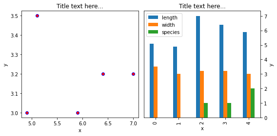

4. Updates & FAQ#
4.1. Chap 05: matplotlib advanced layouts#
4.1.1. Adding pandas plots to subplots layout#
Let’s create a dataframe to plot.
import pandas as pd
import numpy as np
import matplotlib.pyplot as plt
############ here is an arbitrary dataframe to plot
df = pd.DataFrame([[5.1, 3.5, 0], [4.9, 3.0, 0], [7.0, 3.2, 1],
[6.4, 3.2, 1], [5.9, 3.0, 2]],
columns=['length', 'width', 'species'])
df
| length | width | species | |
|---|---|---|---|
| 0 | 5.1 | 3.5 | 0 |
| 1 | 4.9 | 3.0 | 0 |
| 2 | 7.0 | 3.2 | 1 |
| 3 | 6.4 | 3.2 | 1 |
| 4 | 5.9 | 3.0 | 2 |
Important
The format for matplotlib plots is:
axes_name.plot_type(xdata, ydata, options) e.g., axes1.scatter(x=df['length'], y=df['width'],'k.')
The format for pandas plots is:
dataframe.plot.type(ax=axes_name, options) e.g., df.plot.bar(ax=axes2)
Example code is given below. Notice the placement for the axes name in matplotlib vs pandas.
############# plotting side by side
fig, (axes1, axes2) = plt.subplots(nrows=1, ncols=2,figsize=(8, 4))
########## matplotlib scatter plot
axes1.scatter(x=df['length'], y=df['width'], marker='o', c='r', edgecolor='b')
axes1.set_title('Title text here...')
axes1.set_xlabel('x')
axes1.set_ylabel('y')
########### pandas bar plot
df.plot.bar(ax=axes2) #note the difference in format compared to scatter above
axes2.set_title('Title text here...')
axes2.yaxis.tick_right()
axes2.set_xlabel('x')
axes2.set_ylabel('y')
axes2.yaxis.set_label_position("right")
fig.tight_layout()
